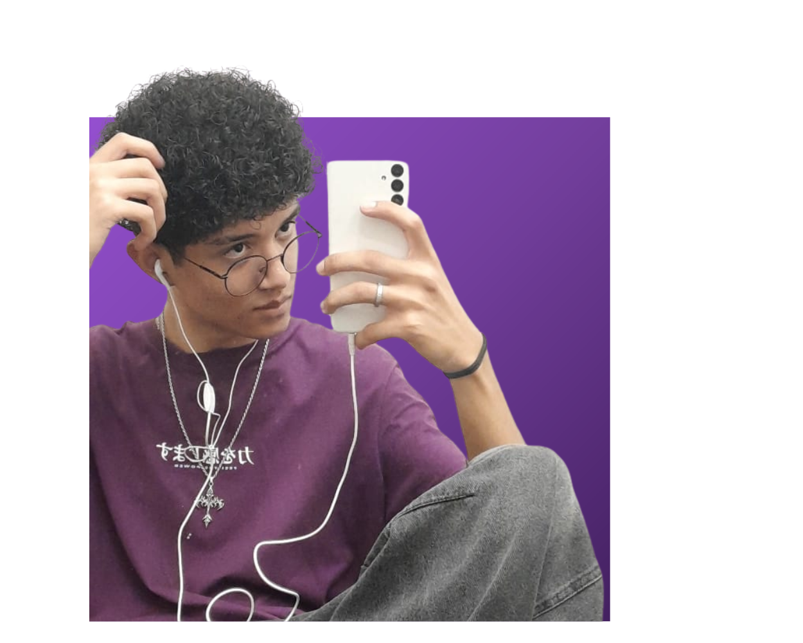
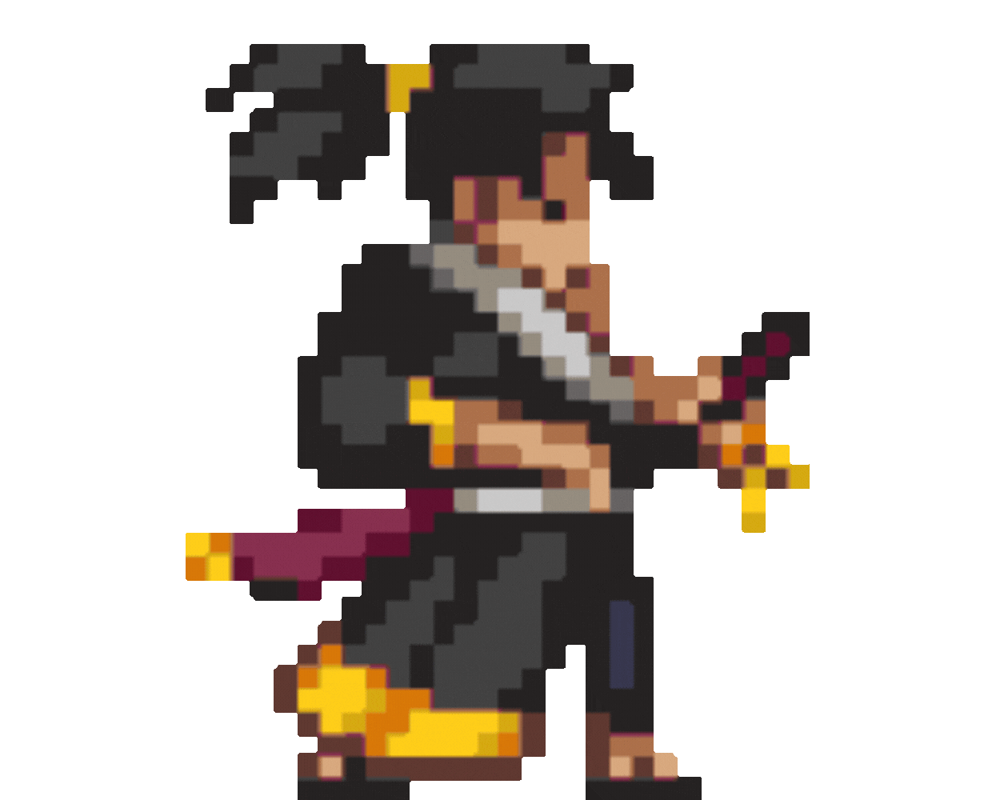
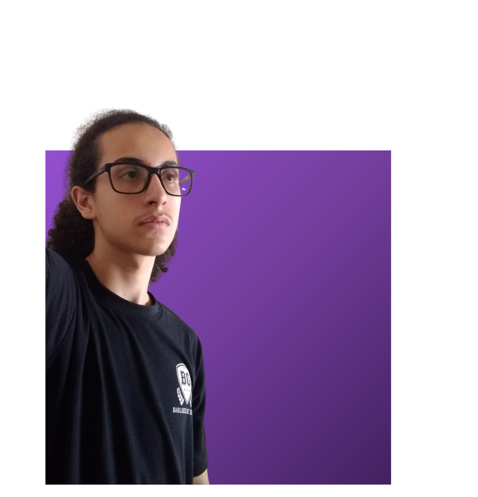
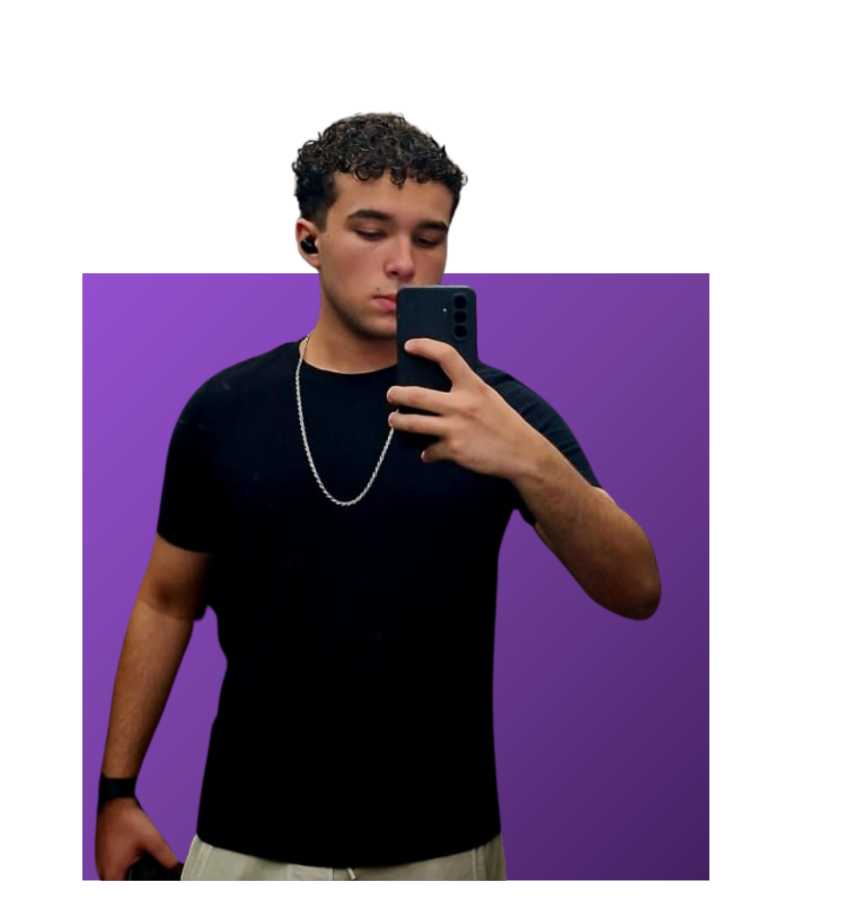
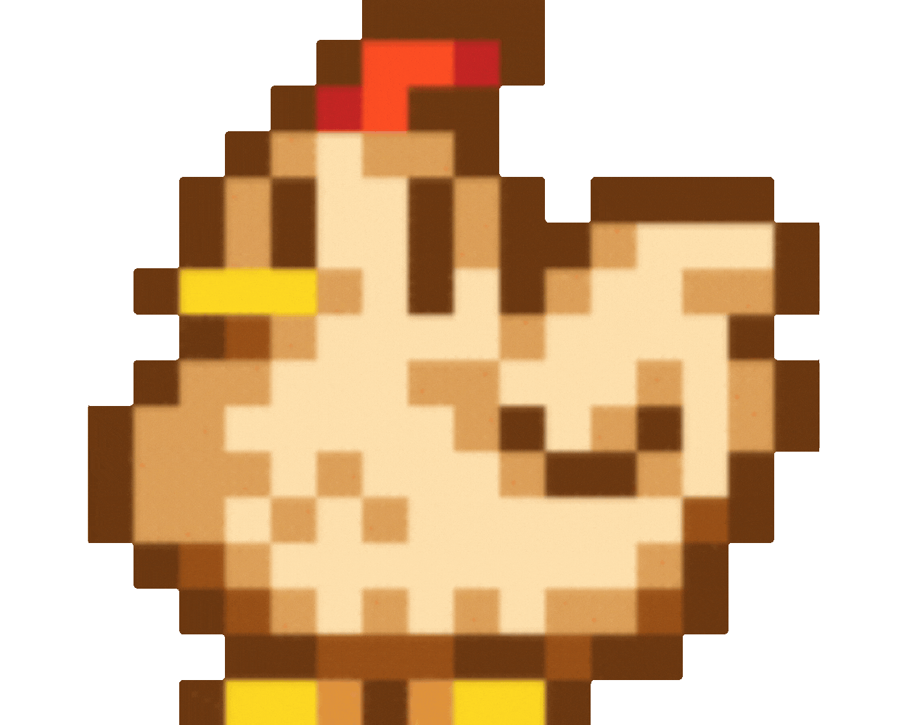

Guilherme Ferreira Angelim
Designer e diretor de ideias criativas
Estudante de análise e desenvolvimento de sistemas: segundo ano. Realizou a criação do design do projeto e coordenou ideias criativas.


Engenheiro de Software com experiência na área educacional, atuando como professor e coordenador de cursos voltados ao desenvolvimento de sistemas e jogos digitais. Possui também formação e prática como Scrum Master, aplicando metodologias ágeis para otimizar processos, promover a colaboração em equipe e garantir a entrega eficiente de projetos tecnológicos.






